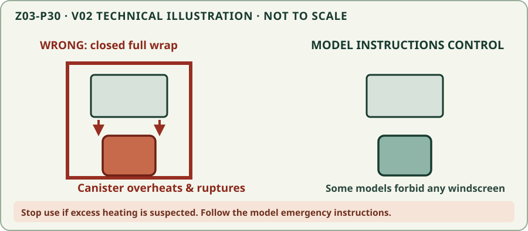

Z03-P30 · Fire and ignition · New manuscript
Match stove windscreens, pot supports and fuel bottles to manufacturer specs
Prevent fuel-canister overheating, burst pressure valves and pot tip-overs when using windscreens and accessories.
When it applies · Setting up canister or liquid camp stoves in breezy outdoor conditions.
Equipment · Stove, manufacturer-approved windscreen (if permitted for that stove), level base and matched fuel canister or bottle.

Actions
- Never wrap a tight full-enclosure foil windscreen around a canister-top stove—trapped radiant heat can overheat the pressurized fuel canister underneath and cause a catastrophic rupture.[C15, ED]
- Follow the exact model instructions. Some canister-top stoves explicitly prohibit all windscreens. Do not add or position a barrier that the instructions prohibit or that can redirect heat toward the fuel container.[C15, C21]
- Match pot diameter to stove arm limits and place the stove on a flat non-flammable surface so boiling pots cannot tip onto operators or dry needles.[C15, C02]
Failure recognition · Wrapping heavy aluminum foil snugly around a threaded isobutane canister until the metal becomes too hot to touch.[C15]
Verify · Confirm fuel canister stays cool to touch during operation, pot sits centered on stable supports and surrounding ground is cleared of dry needles.[C15, C02, ED]
Stop or change course · If fuel heating, abnormal flames or unstable supports are suspected, stop use and follow the manufacturer emergency guidance. If you cannot safely shut it down, move away and seek help.[C21, T01, T02]
Evidence and editorial notes
- C02 · USDA Forest Service / Smokey Bear · Smokey Bear’s Campfire Safety Guide (agency PDF)
- Section: Build your campfire; choose a location · Conditions: Where campfires are currently permitted
Support: Use an established fire ring where required or available. Protect the area from nearby combustible materials, avoid windy conditions and keep water ready.
Limitations: Site clearances vary by fuel load, slope, and wind; no universal safe radius fits all terrain. · Conflicting evidence: None; aligns with USFS-FIRE.
Editorial note: Grounds site-selection and ring-preparation procedures. · Specialist reviewer: Fire prevention and land management
Primary source · checked 2026-11-24 - C15 · NPS · Wildland Fire Safety (current web edition)
- Section: Wildland Fire Safety > Campfires and Stoves · Conditions: Outdoor cooking with portable liquid or canister stoves
Support: Operate stoves on level cleared ground away from tents and dry fuels, cool completely before refueling, and move away from any spilled fuel before lighting.
Limitations: Fuel canisters behave differently in cold weather and high elevation; follow manufacturer limits. · Conflicting evidence: None; aligns with CPSC-C and USFS-FIRE.
Editorial note: Governs stove setup, refueling isolation, and spill failure recognition. · Specialist reviewer: Portable appliance safety and fire prevention
Primary source · checked 2026-11-24 - C21 · MSR · PocketRocket 2 instructions (English owner instructions)
- Section: DANGER > Fire and explosion; Stove set-up · Conditions: PocketRocket 2 or its exact replacement instructions
Support: The PocketRocket 2 manual prohibits windscreens and specifies safe outdoor use, clearances and handling.
Limitations: Model-specific. Other equipment requires its own current instructions. · Conflicting evidence: See A01 cross-zone review.
Editorial note: Use only within the stated conditions. · Specialist reviewer: Camping stove and combustion safety
Primary source · checked 2026-11-24 - T01 · American Red Cross · First Aid Steps (current web edition)
- Section: First Aid Steps > Check the scene; check the person · Conditions: Lay responder in United States; assess safety before contact
Support: Check scene safety, responsiveness, breathing and immediately life-threatening conditions.
Limitations: Lay guidance does not replace advanced clinical or rescue protocols. · Conflicting evidence: None; universal first-response opening gate.
Editorial note: Anchors scene-safety-first rule across Z01. · Specialist reviewer: EMS and wilderness medicine
Primary source · checked 2026-11-24 - T02 · American Red Cross · First Aid Steps (current web edition)
- Section: First Aid Steps > Call 9-1-1 · Conditions: Lay emergency response to unresponsiveness, abnormal breathing or severe bleeding
Support: Activate EMS and get needed equipment. Follow dispatcher directions and act within training.
Limitations: Remote locations may delay EMS arrival, requiring sustained stabilization after activation. · Conflicting evidence: None; aligns with NPS-E.
Editorial note: Mandates early emergency activation and dispatcher adherence. · Specialist reviewer: EMS and wilderness medicine
Primary source · checked 2026-11-24
Source lineage · NPS fire safety and CPSC camping equipment; new manuscript · Classification · New manuscript.